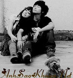

|
Định mệnh đã mang em đến bên anh, một sự sắp đặt đầy đau thương và nghiệt ngã. Đó là cuộc gặp gỡ của hai con người với hai nét tính cách khác biệt nhau. Em – người con gái Sài Thành năng động và mạnh mẽ và anh – người con trai tỉnh lẻ thụ động và yếu đuối – đã đến với nhau không chút suy tư, toan tính. Chúng ta là bạn thân của nhau lúc còn là sinh viên lớp Cao Đẳng. Tuy nói chuyện với nhau không nhiều nhưng đã có lúc chúng ta chia sẻ với nhau mọi vui buồn trong cuộc sống. Lúc đó, em chỉ xem anh là một người bạn bình thường như những người bạn khác. Còn anh, đã có lúc rung động nhưng chưa đủ để nói là yêu! Thời gian cứ thế trôi qua. Anh và em cũng đã có người yêu của mình. Và cả hai đều thất bại trong tình yêu. Thật cay đắng và đau đớn biết bao. Tưởng chừng như anh không còn niềm tin vào cái gọi là tình yêu nữa. Nhưng, chuyện gì đến thì cuối cùng cũng đến. Anh đã trao em lời yêu và em đã đồng ý. Em có biết lúc đó anh hạnh phúc thế nào không? Rồi thì niềm hạnh phúc vừa đến ấy đã vụt tắt trong anh và em bởi những rào cản của gia đình. Người ta đâu có quyền lựa chọn nơi mình sinh ra phải không em? Sao ông trời lại đưa anh và em vào hai gia đình mang hai tôn giáo như thế? Chúng ta chỉ có thể đến với nhau nếu anh theo tôn giáo của gia đình em. Nhưng anh không thể bỏ tôn giáo của gia đình mình để đi theo một tôn giáo khác. Anh không thể! Có lẽ thuyết phục là cách giải quyết tốt nhất mà anh và em đã thống nhất với nhau, nhưng nó không thể làm lay chuyển suy nghĩ của hai gia đình. Dù vậy, anh và em vẫn cố gắng, vẫn hy vọng vào một điều kì diệu nào đó sẽ đến. Có lẽ em không hề biết điều làm anh suy nghĩ nhiều nhất là gì đúng không? Đó không phải là rào cản tôn giáo đâu em à.Khi trái tim anh chỉ có mình em là chủ. Anh muốn khóc, muốn chạy trốn, nhưng lại cứ chạy về bên em, con tim đã quen lối rồi em ơi ! Dù đã bao lần con tim chạy trốn, chạy khỏi em, đã bao lần rồi em nhỉ? Anh nói lời chia tay. Vậy mà có lần nào anh ra đi được đâu. Nỗi nhớ lại đến, nó làm anh bối rối và bất lực, lúc quay về bên em. Mà đó là tương lai của em sau này. Em sẽ thành công hơn, đi xa hơn và bay cao hơn nếu không ở bên cạnh anh mà theo sự sắp đặt của gia đình. Anh biết, một khi anh còn ở bên cạnh em thì em sẽ không theo sự sắp đặt ấy. Nhưng em ơi, sao anh có thể ích kỷ mà giữ em lại bên cạnh anh để rồi em phải bỏ lỡ tương lai tươi sáng phía trước? Chắc em không biết rằng đã bao đêm anh thức trắng để suy nghĩ về việc đó. Nhiều lần anh đã quyết định buông tay nhưng khi nhìn vào đôi mắt em, cái ý định ấy trong anh lại biến mất. Lý trí trong anh đã không thể thắng được con tim em à. Anh đã phải đấu tranh giữa hai suy nghĩ ấy rất lâu, nhưng lần nào chiến thắng cũng thuộc về con tim, phần quan trọng nhất của con người. Anh vẫn đang đấu tranh, vẫn đang cố gắng, cho đến khi nào lý trí có thể chiến thắng được con tim của anh. Có thể là sau vài giây, vài ngày, vài tháng hay vài năm… Nhưng dù kết quả có ra sao đi nữa thì anh vẫn luôn yêu em, vẫn dõi theo từng bước chân của em cho đến khi nào em đến đích hay đến khi anh gục ngã. Hãy hứa với anh, rằng em sẽ sống tốt nếu không có anh bên cạnh, em nhé. Nguồn: ASK sưu tầm || Tham gia bình luận TẠI ĐÂY ||
Bạn vô tình đọc ở đâu đó một câu chuyện tình cảm động hoặc một câu chuyện do chính bạn viết ra. Hãy đến với chúng tôi để cùng nhau chia sẻ: wWw.anhsaokhuya.net
Chung tay vì một thế giới online lành mạnh !
|